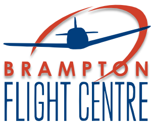
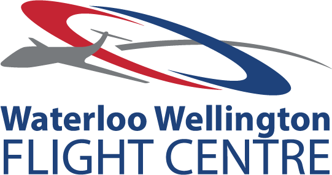

Flight Training Requirements
Before taking the flight exam for a Private Pilot License, students must show evidence of having completed at least 35 hours of total flight time. However, the length of the training will be dependent on each student. Although the minimum requirement for a Private Pilot License is 45 hours, the average amount of flight hours a student takes to obtain the license is anywhere between 65 – 85 hours. Each student will complete training for all exercises with a certified flight instructor and keep a log their training hours in their pilot logbook.
Below is the general breakdown of flight training that each student will complete. A detailed description of each exercise is available on the Transport Canada website.
- Stage 1 – Basic Aircraft Handling
- Stage 2 – Airwork
- Stage 3 – Circuits
- Stage 4 – Advanced Procedures & Airwork
- Stage 5 – Cross Country Flights
- Stage 6 – Private Flight Test Preparation
Each instructor will teach their student the required flight training exercises and provide ground briefing after the flight to discuss their flight in detail. Below is a list of some of the best flight schools in Ontario that offer training for a Private Pilot License and ground school.
Best Flight Schools in Ontario
The Brampton Flight Centre is located in the Brampton-Caledon Airport (CNC3) and it is close to Canada’s largest and busiest international airport, Toronto Pearson. The Brampton flight centre is a highly reputable training facility that has been offering training programs since 1946. They offer a variety of flight training programs for those seeking recreational or commercial licenses and ratings. BFC has a fleet of well-maintained aircrafts including a variety of Cessna and Piper aircrafts, and flight simulators. BFC also provides many additional services such as a restaurant-café, pilot shop, aircraft maintenance and much more.
The Waterloo Wellington Flight Centre is located in Breslau at the Region of Waterloo International Airport (CYKF). WWFC has been training pilots since 1932 and has a reputation for their commitment to women in aviation. They offer many events for future female pilots and encourage women to pursue aviation by offering awards and scholarships. WWFC also collaborates with the University of Waterloo and Conestoga College by providing training facilities to students in the aviation programs. Their fleet of 32 aircrafts is one of the largest in Canada, and consist of a variety of Cessna, Piper, and Diamond aircrafts, and 2 flight simulators. WWFC also provides additional services including a café, pilot shop, aircraft maintenance and more.